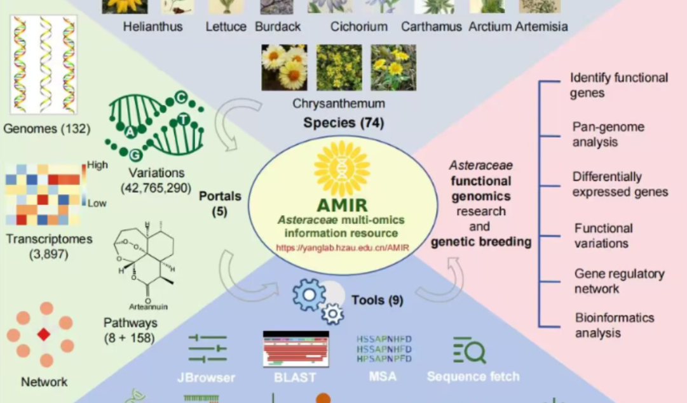

Overview
Welcome to AGRP
Asteraceae Genomics Bioinformatics Research Platform for Asteraceae research discovry.To construct a bioinformatics platform that can be used for multi-genome collinearity analysis of Asteraceae plants, which can analyze genome structure and function studies across species. Comprehensively open up the function of "ancestral genome-multigene collinearity-chromosomal rearrangement-functional genes" mutual search, and finally create a high-powered platform for genome research of Asteraceae plants, so that botanists can query their status in Asteraceae ancestors, homologous copies in the existing genome, chromosomal distribution, and biological processes involved by submitting gene IDs or sequences with one click.



Portals of data
Tools quick links

|
Genome browsing and visualization |
|
|
Systematic development and evolutionary analysis |

|
Analysis of Gene Structure and Characteristics |

|
Homology and Gene Family Analysis |

Citation
If you use ABRF in your scientific research, please cite us:
・ Two-step model of paleohexaploidy, ancestral genome reshuffling and plasticity of heat shock response in Asteraceae・ AGRP: A high-value bioinformatics platform empowering the genomics research of Asteraceae